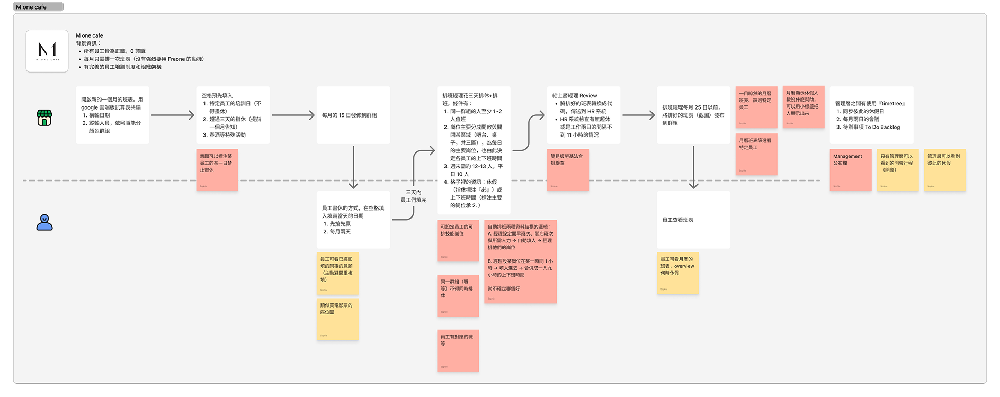
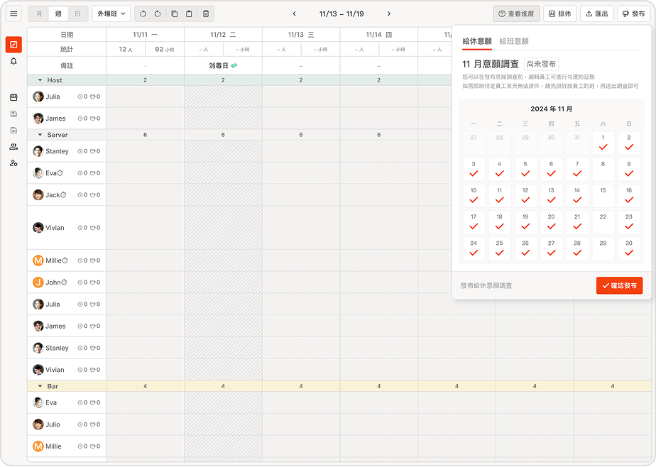
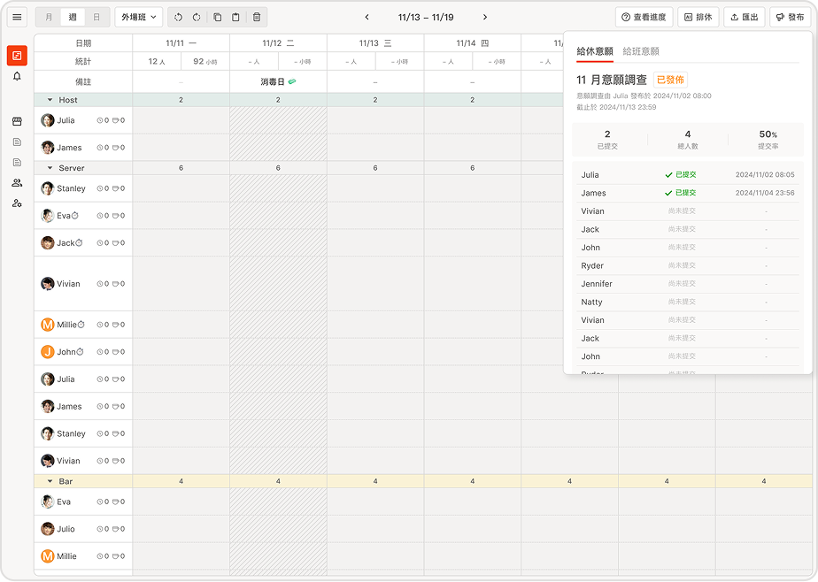

← 返回首頁


 ← 返回首頁
← 返回首頁
FREONE - 餐飲智能排班系統
專案背景
什麼是 FREONE？
為餐飲業帶來簡單易用的排班 SaaS 工具，幫助餐廳提升營運效率，包含餐廳管理者使用的後台排班系統以及員工使用的 App。
目標
從 0 → 1 產出品質佳的 MVP，解決餐飲業管理排班的煩惱與工作負擔。
我的角色與具體工作內容
我的角色
新創三人核心團隊成員
具體工作內容
- 新創初期的極簡編制下（共三人），由我負責前期的用戶調查探索問題至規劃解決方案和流程設計
- 開技術前，設計了解整個排班流程的流程圖，並需求整理填寫完整規格文件
- 每個版本做完後快速進行，快速迭代產品
- 出版後系統，設計出成品用戶行計：研究、Mockup 與 Prototype
- 以把期間責的工具供合作商系統來確保，後端建置使用 Wordpress 架設



關鍵成果與影響指標
系統前七天試搏用戶（餐廳經理）約一步內占 0 倒升至超過 100
老品取得試用商更動們的忠客
推待使用的初定，有試用的初查在尚未填表的情況下完成初的約設定並開始排班，數數到 UX 設計的一大定
遇到的挑戰與解決方式
挑戰一、從 0 到 1
由 0 到 1 有很多初始挑戰，功能在初期上架後，嚴重缺乏真實使用者的回饋，加上資源有限，因此需要用最小成本驗證產品方向。
解決方案
- 不斷修正與改進
- 積極傾聽使用者的回饋